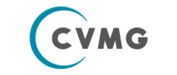
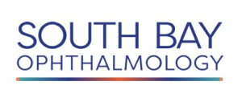
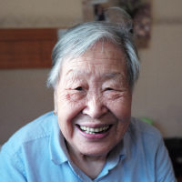
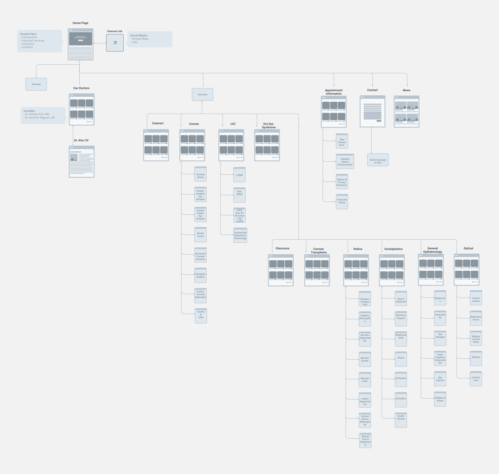
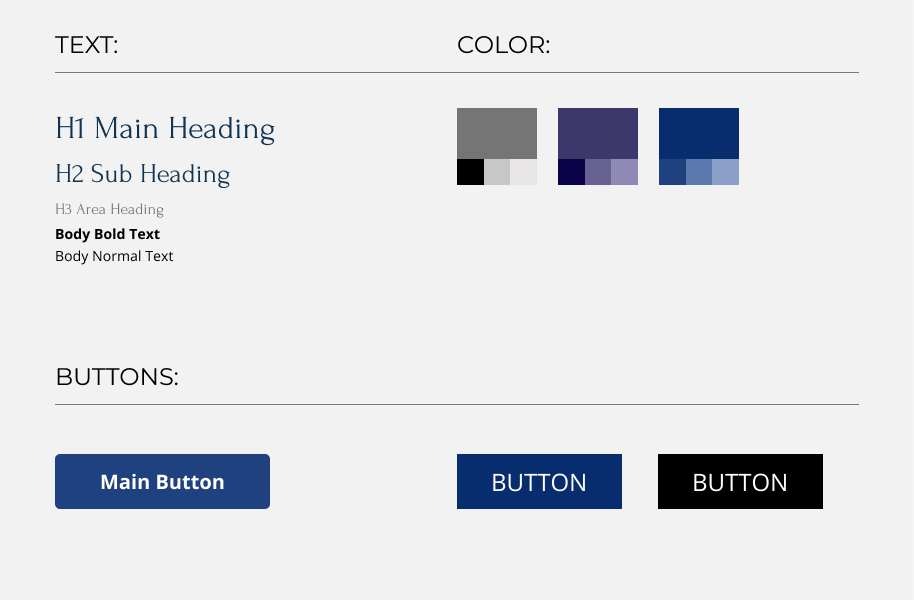

SUMMARY
This website is for Polaris Eye & Laster,
Inc. which is a private practice for Dr. Jeehee Kim, an
ophthalmologist located in the Bay Area. She needed a website that
lists the services that she can offer as a medical professional,
specifically her specialization in cornea surgery.
RESEARCH
- Because of Dr. Kim’s focus on eye surgery, a majority of her
regular clients are 60+ years old. The website needs to be simple
and easy to navigate to accommodate people who may struggle with
technology.
- Due to the target demographic of the audience, the website needs
to use a larger font to accommodate viewers with limited eyesight.
- Most people find out about Polaris Eye through insurance
providers. The website should also focus on standing out locally,
as it represents a private practice.
COMPETITIVE ANALYSIS
SPECTRUM EYE
CAREY VISION

STRENGTH:
- Beautifully designed, clean, little design touches and
animations that give the website charm and professionalism
- The information architecture is clear and well organized
- Redundancies for making appointments
STRENGTH:
- Simple, easy to navigate, informative; has everything a user
needs on a website
- The information architecture is clear and well organized
- Redundancies for making appointments
WEAKNESS:
- Because the practice has several different doctors and
operates in several different locations, it may be more
difficult to arrange an appointment with desired opthalmologist
- There is a lot of text about complex medical information,
which may overwhelm users
WEAKNESS:
- Banner image is basic, header image has information that may
be difficult to read because it is crowded
- Client finds the color choice and design too plain
LAURA PHAN
SOUTH BAY

STRENGTH:
- Simple, no-frills website
- Lacks clutter, makes it easy to go through the website
- Single person practice, which is unusual since most websites
are group practices
STRENGTH:
- Bold and eye-catching design, stands out among competitors
- Medical information included is simple and easy to follow by
using bullet points
- Uses images strategically and informatively
WEAKNESS:
- Lacks images or descriptions that can clarify things for users,
may be overly plain
- Unique design comes at the cost of making the website user-friendly
WEAKNESS:
- Strong gradient color choices can be distracting for
users, especially if they struggle with their vision
- Design may not suit website for opthalmology
USER PERSONA
ESL GRANDMOTHER
Boomer Korean Immigrant

FRIENDLY FACE
Millennial Woman
GOALS:
- Find a practice where she can communicate with a medical
professional who is fluent in Korean
- Get the eye care that she needs to accommodate her specific
needs as an elderly woman struggling with cataracts
GOALS:
- Find an opthalmologist who can help him with his rapidly
declining eyesight
- Receive a diagnosis that can explain his health troubles
and receive the treatment needed to alleviate his symptoms
GOALS:
- Find a reliable ophthalmologist where she can receive
general eye care, which may or may not include an updated
prescription for her eyesight
- Recieve care in a friendly environment
DIFFICULTIES:
- Being able to navigate a website where she can find
everything she needs as someone who is not well-versed in
technology
DIFFICULTIES:
- Being able to understand the medical terminology that he is
unfamiliar with
DIFFICULTIES:
- Finding a medical practice where she feels welcomed and cared for
SITEMAP

STYLE GUIDE

COPYWRITING
The client had a series of documents detailing different medical
conditions and surgical procedures that she wanted to put on the
website. However, it was significantly more detailed and complex
such that the layperson would struggle to understand the medical
terminology and go through the dense material. The goal was to make
sure that the information was accessible enough for the users to
easily read and understand. I went through the documents and
simplified the language; however, because the client wanted to
maintain the integrity of the original document as much as possible,
we also had to compromise on the final document.
FINAL WEBSITE
We published the website on Wix mainly because the client wanted the
freedom to edit the material herself. Previously, she had her website
managed by a design studio and she did not like that she had to ask them
to make changes, especially since they were often slow to get back to
her. Because Wix happened to have the easiest UI for her and included
business features that can help her take appointments from her clients,
we decided that this would best suit her needs.
VIEW WEBSITE
WHAT I LEARNED
It was interesting to complete this project while working closely with
a client who doesn’t have any knowledge about design principles. The
client favored a brutalist style and wanted this website to accommodate
her aesthetic choices, even though it would go against the font
hierarchy, color scheme, or the style guide in general. We managed to
negotiate things such that she was able to be satisfied with the final
product while maintaining some consistency with the design choices. I
came out of this experience learning that it was important to be able to
work with a client to figure out what they want and make compromises as
needed, according to the situation at hand.